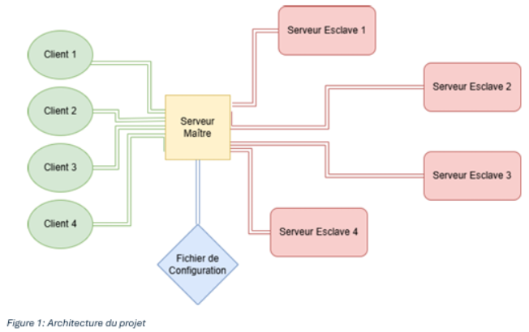
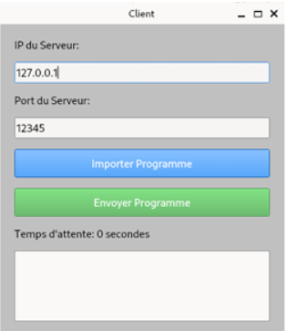
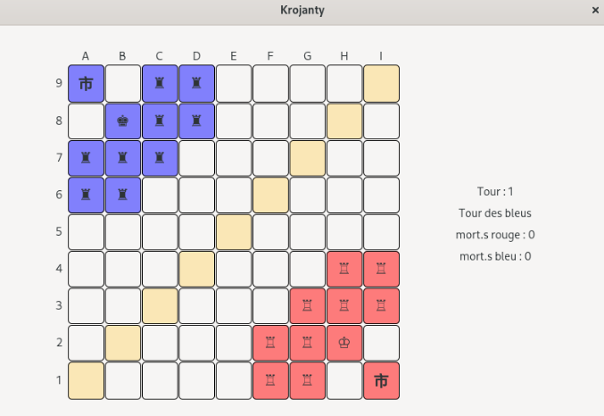
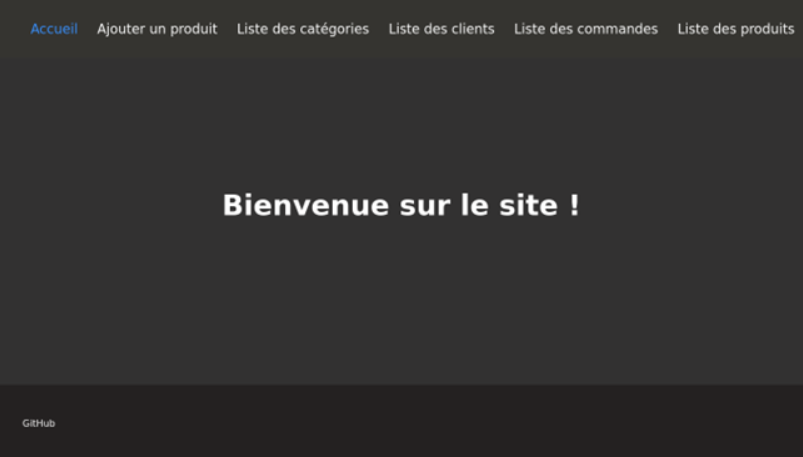

SAE 3.02 – Développer des applications communicantes
Dans le cadre de cette SAE, j'ai conçu et développé une architecture distribuée multi-serveurs
permettant de compiler et d'exécuter à distance des programmes envoyés par des clients.
Le but était de garantir une exécution fluide, même en cas de forte charge, tout en permettant
à plusieurs utilisateurs d’interagir en même temps avec le système.
Ce projet m’a permis de travailler sur des notions avancées comme la répartition de charge
(load balancing), la communication réseau via sockets, la gestion de processus et la scalabilité.

Architecture distribuée multi-serveurs
J’ai développé un système organisé autour d’un serveur maître qui reçoit les requêtes des clients.
Lorsque la charge est trop élevée, il peut déléguer l’exécution des programmes à des serveurs
secondaires. Le client reçoit ensuite le résultat via le serveur principal.
Fonctionnalités principales
Le client dispose d’une interface graphique qui permet d’envoyer un programme (en Python ou en C) à un serveur distant.
Le serveur reçoit le programme, le compile (si nécessaire) et l’exécute.
Le résultat ou les erreurs sont renvoyés au client.
Plusieurs clients peuvent se connecter et envoyer des programmes en même temps.
Si un serveur est surchargé, la tâche est automatiquement transférée à un autre serveur.
Interface client
J’ai développé une interface graphique simple et intuitive qui permet à l’utilisateur :
De sélectionner un fichier à envoyer ;
D'entrer l’adresse IP et le port du serveur ;
De visualiser un compteur de temps et le résultat de l’exécution.

Interface graphique du client
Livrables réalisés
Le code source complet (client, serveur maître et secondaires)
Une documentation d’installation claire
Un rapport final détaillant mes choix d’architecture
Une vidéo de démonstration montrant plusieurs clients connectés
Ce projet a été réalisé dans le cadre d’un projet d’immersion à l’ENSISA
(École Nationale Supérieure d’Ingénieurs Sud-Alsace), dans le cadre d’un partenariat
pédagogique entre l’IUT de Colmar et l’ENSISA.
Il visait à nous confronter à une approche proche du cycle ingénieur,
combinant développement logiciel et programmation réseau.

Projet d’immersion ENSISA – Jeu multijoueur en C
Architecture générale du jeu
Le jeu repose sur une architecture client-serveur développée en langage C,
permettant la gestion de parties multijoueurs, la synchronisation des états de jeu
et la séparation entre logique applicative et communication réseau.
Logique de jeu
J’ai conçu et implémenté la logique de jeu dans son ensemble, incluant les règles,
la gestion des états, les transitions entre les différentes phases et la validation
des actions afin de garantir la cohérence globale, notamment dans un contexte multijoueur.
Intelligence artificielle
Une intelligence artificielle a été intégrée afin de permettre des parties en mode solo ou mixte.
Elle repose sur une logique décisionnelle basée sur l’état courant du jeu et des règles prédéfinies.
Communication réseau
La partie réseau s’appuie sur une communication via sockets entre clients et serveur.
Les actions des joueurs sont transmises au serveur, qui centralise l’état du jeu,
valide les actions et redistribue les mises à jour afin d’assurer la synchronisation des joueurs.
Gestion des états et synchronisation
L’état du jeu est centralisé côté serveur afin d’éviter les désynchronisations.
Cette approche permet de garantir la cohérence des parties et se rapproche des architectures
utilisées dans les systèmes distribués.
Contraintes techniques et bonnes pratiques
Le développement en C m’a amené à travailler avec la gestion manuelle de la mémoire,
la structuration du code pour en assurer la lisibilité et la maintenabilité,
ainsi qu’une démarche de tests progressifs.
Dans le cadre de cette SAE, j’ai travaillé sur la mise en œuvre d’un système IoT
de suivi de véhicule, basé sur des cartes Pycom et reposant sur la transmission
de données GNSS vers un serveur distant.
L’objectif principal était de collecter, transmettre et visualiser des données
de géolocalisation tout en respectant les contraintes énergétiques propres aux systèmes embarqués.
Ce projet m’a permis de consolider mes compétences en systèmes embarqués,
en réseaux IoT, ainsi qu’en chaînes de traitement de données temps réel,
depuis le capteur jusqu’à l’interface de supervision.
Architecture du système
Le système est organisé autour d’un End Device Pycom (FiPy/LoPy) associé à une carte Pytrack,
permettant l’acquisition des coordonnées GNSS.
Les données collectées sont transmises via le réseau LoRaWAN vers une application
hébergée sur The Things Network (TTN).
Côté serveur, les messages sont récupérés via le protocole MQTT et traités par un flux Node-RED,
déployé sur un Raspberry Pi, afin d’assurer la visualisation de la position du véhicule
sur une interface cartographique web.
L’architecture a été conçue pour limiter la consommation énergétique,
le dispositif fonctionnant par défaut en mode basse consommation,
avec activation du GNSS et de la communication uniquement lorsque le véhicule est en mouvement,
grâce à l’utilisation de l’accéléromètre de la carte Pytrack.
Fonctionnalités principales
Acquisition des coordonnées GNSS via la carte Pytrack
Transmission des données via LoRaWAN (TTN)
Utilisation du protocole MQTT pour l’acheminement des messages
Formatage des données côté serveur (JSON)
Visualisation des positions sur une carte via Node-RED
Optimisation des données transmises afin de réduire la charge réseau
Gestion de la consommation énergétique (modes sleep / deep sleep)
Interaction avec le dispositif via des messages descendants (downlink)
Interface de supervision
Une interface web a été mise en place afin de permettre à l’utilisateur de :
Visualiser la position du véhicule sur une carte
Suivre l’évolution des données GNSS transmises
Interagir avec le dispositif à distance (activation ou arrêt du suivi)
Compétences techniques mobilisées
Systèmes embarqués (Pycom, Pytrack)
Réseaux IoT et LPWAN (LoRaWAN)
Protocoles de communication (MQTT)
Traitement et formatage de données
Supervision et visualisation avec Node-RED
Conception d’architectures IoT sobres en énergie
SAE 23 – Mettre en place une solution informatique pour l’entreprise
1. Projet
Nous avons comme sujet le projet d’un site web de gestion d'un Drive.
C’est une application web à travers laquelle on peut créer des commandes.
Le site interagit avec une base de données contenant les entités suivantes :
catégorie, produits, clients, commandes et listes de produits d'une commande.
Nous avons spécifié un comportement CRUD (Create, Read, Update, Delete)
pour chacune des entités.
On peut également ajouter de nouveaux produits en important un fichier CSV
et produire des fiches de commande au format PDF.

Site Web
2. Les compétences développées
Pendant ce projet, j'ai acquis de nombreuses compétences.
Parmi elles, l'utilisation de GitHub pour le suivi des versions et la collaboration
sur le code a été une compétence clé, permettant de gérer les modifications de code
et de travailler efficacement en équipe.
J'ai appris à utiliser les branches sur GitHub pour gérer le développement parallèle
et faciliter la collaboration. En créant des branches pour différentes fonctionnalités,
j'ai pu travailler sur des parties spécifiques du code sans affecter la branche principale.
J'ai également appris à fusionner des branches, à résoudre les conflits de code
et à utiliser les pull requests pour revoir et intégrer les modifications
de manière structurée.
En ce qui concerne les bases de données, j'ai appris à choisir et configurer
une base de données relationnelle (comme MySQL) pour stocker et gérer les données
de manière efficace. Cela inclut la conception de schémas de base de données.
J'ai aussi acquis les compétences nécessaires pour connecter une base de données externe
à un projet Django, en configurant les paramètres appropriés dans le fichier
settings.py.
Enfin, j'ai appris à déployer un projet Django sur une machine virtuelle
en utilisant le serveur web Apache2.
Cela comprenait l'installation des modules nécessaires comme mod_wsgi,
la configuration des fichiers Apache pour servir l'application Django,
et la gestion des environnements virtuels pour isoler les dépendances du projet.